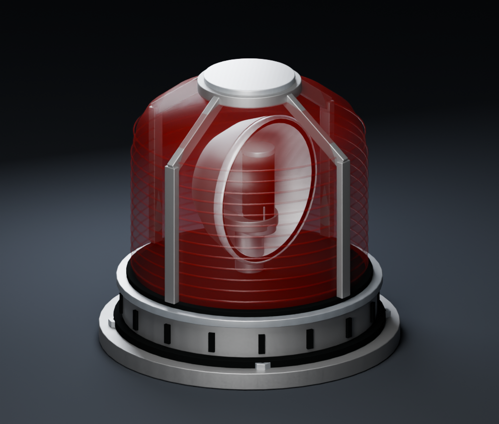
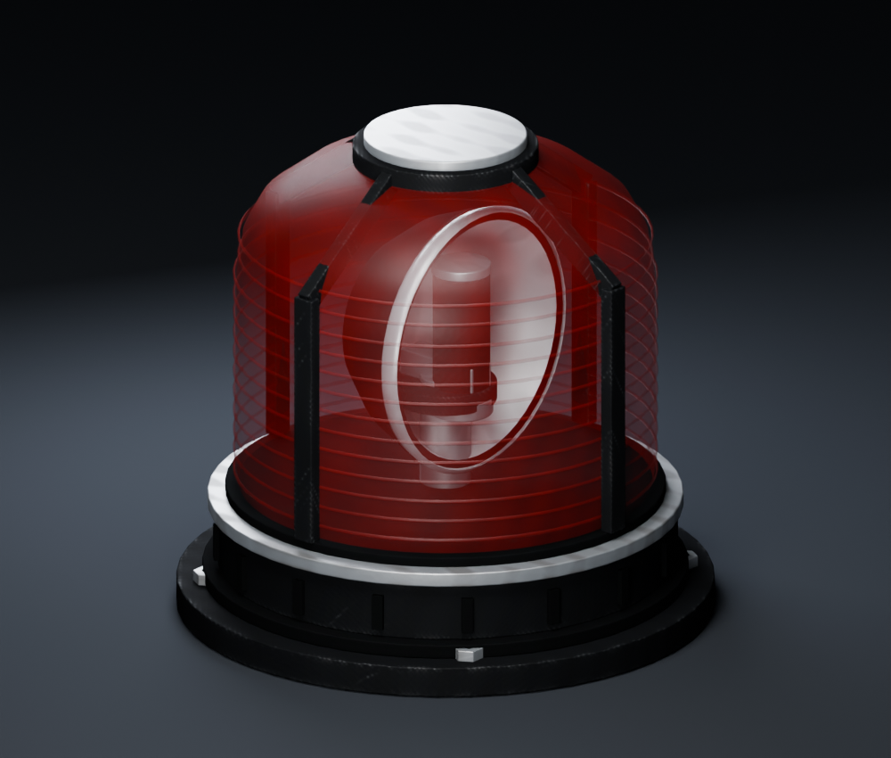
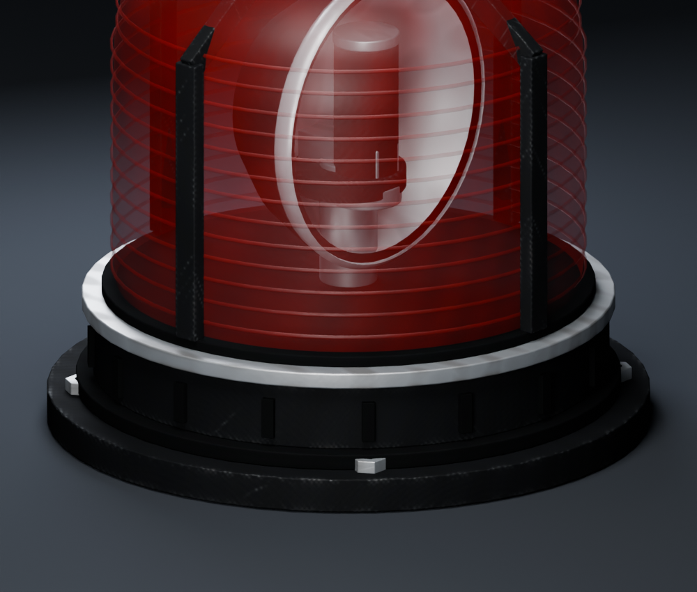
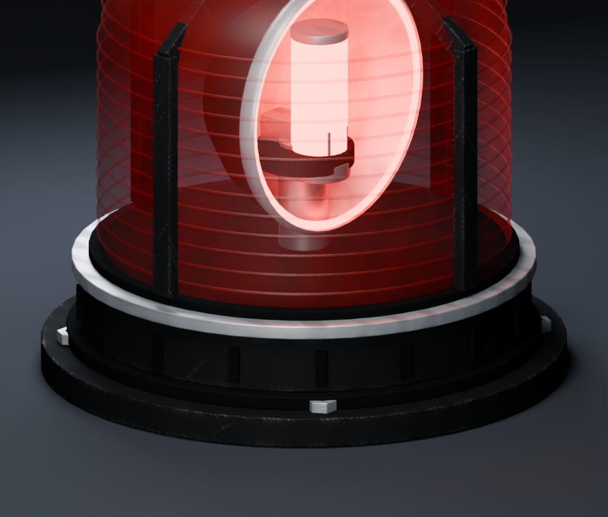
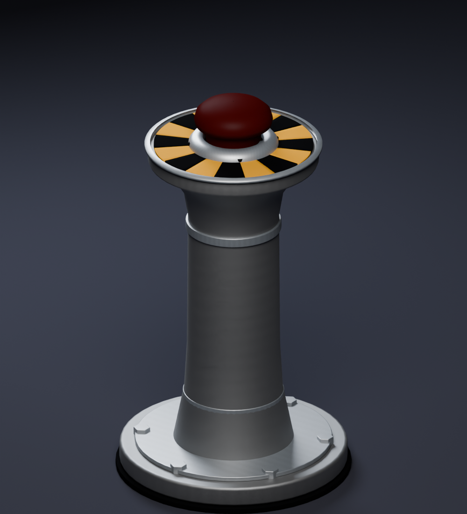
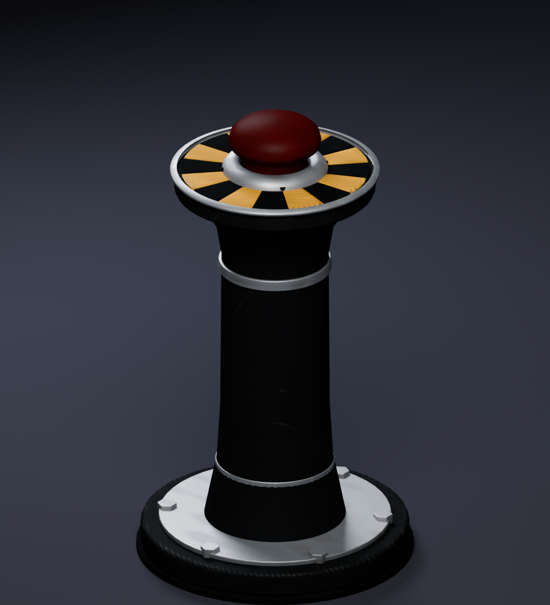
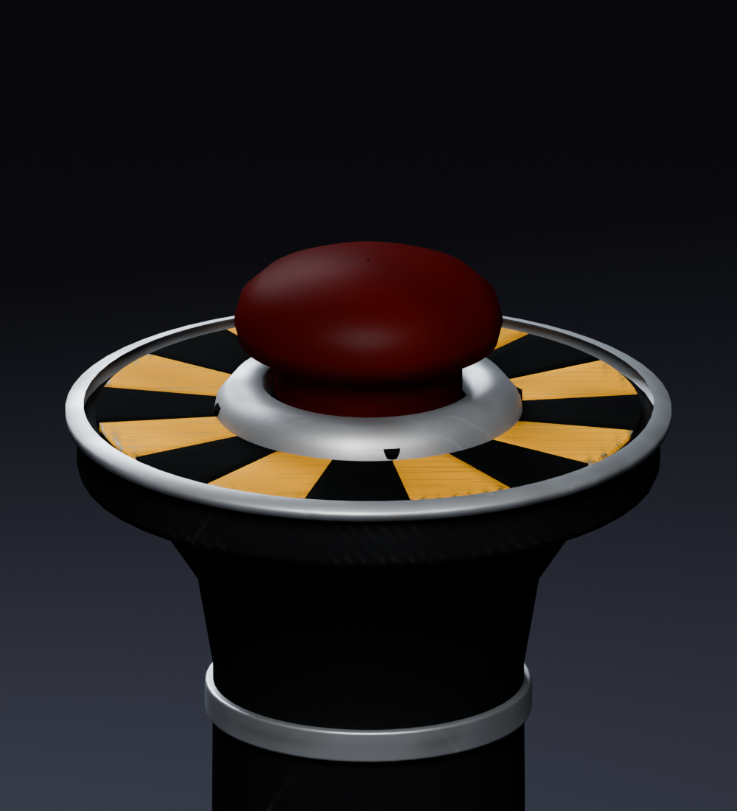
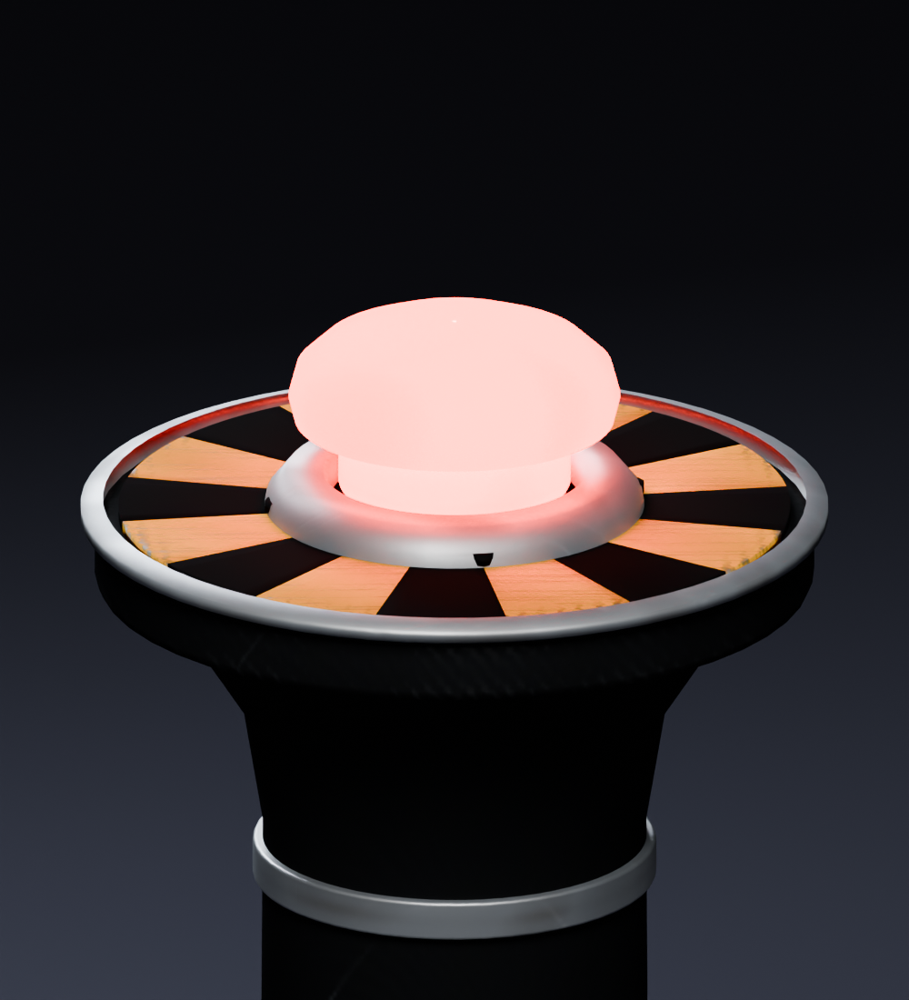

Actual native texture, normal, gloss and specular maps. The transparent lens uses its native color/normal/gloss maps and constant dielectric reflectance 0.04; its declared specular image is unused by the compiled shader. Matched studio comparison; BO3 lighting and final appearance still require the user's playtest.








Same meshes, pivots, LODs, geometry, light strength and timing. Reproduction and evidence.